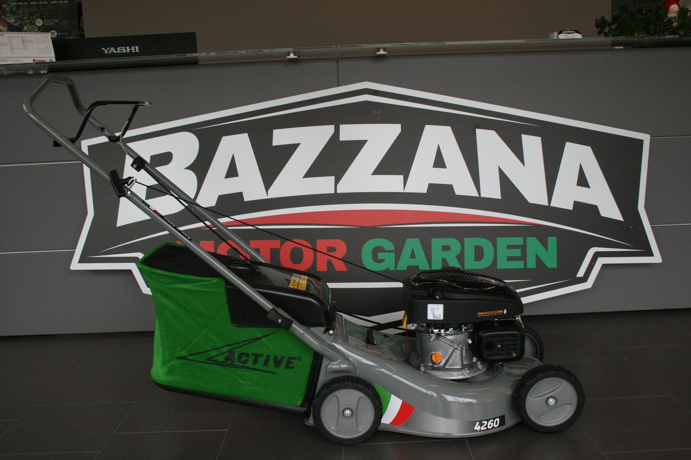
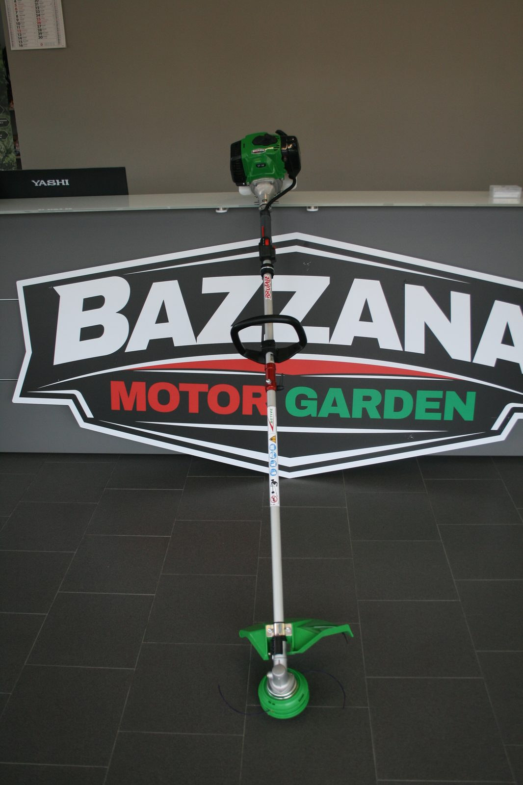
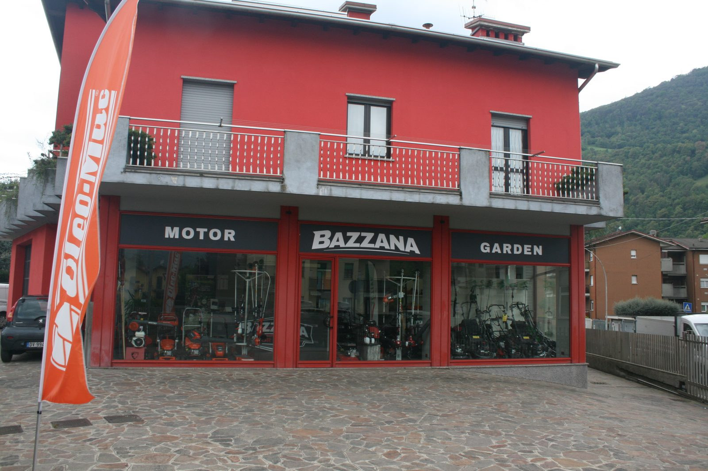
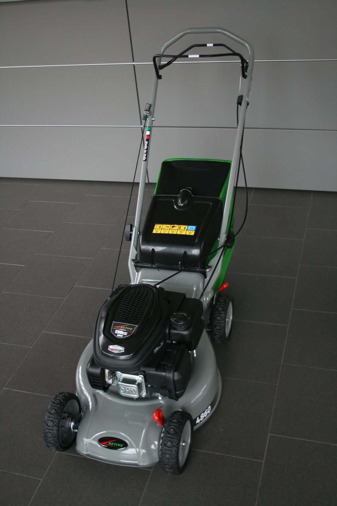
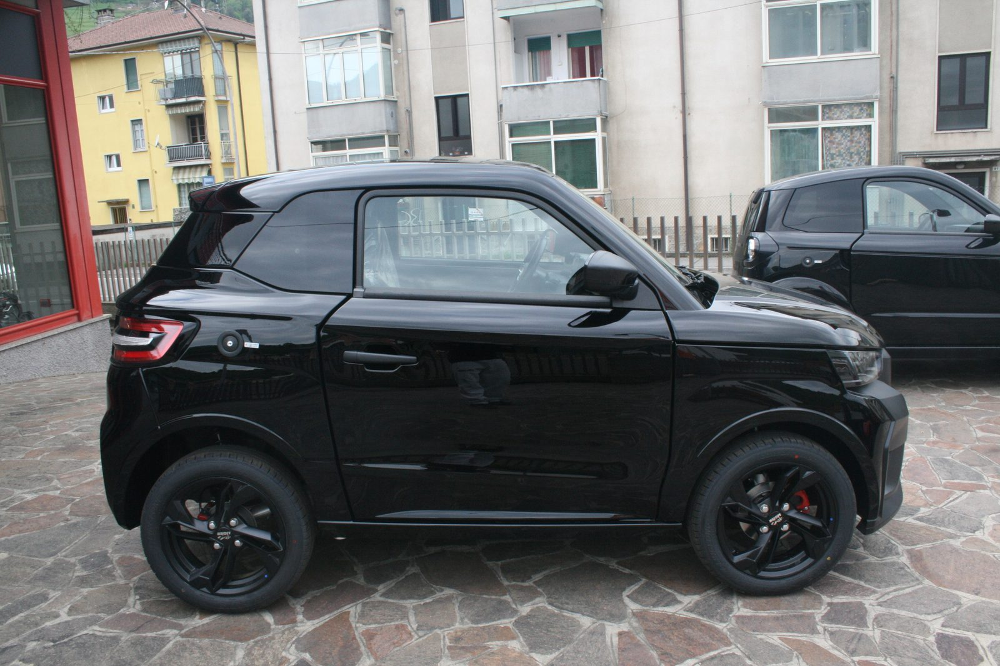
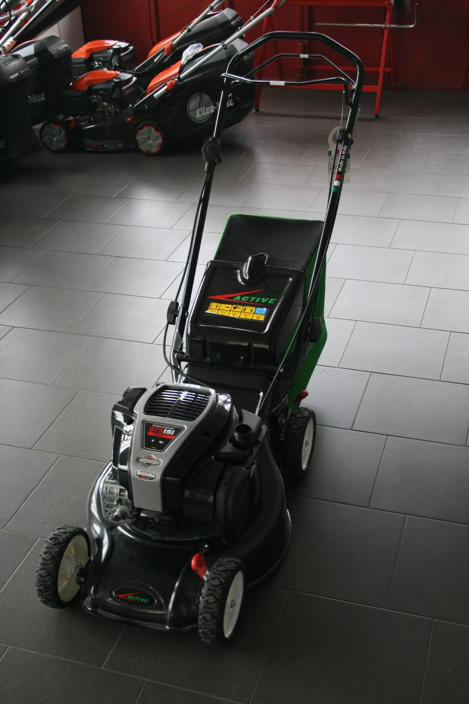

04 — Storia
Una valle stretta,
una passione
larga.
Comincia tutto in un garage di Cene, nel 1998. Da allora abbiamo cambiato sede, marche, generazioni — il banco da lavoro è sempre lo stesso.
L'inizio.
Giuseppe Bazzana apre la prima officina-vendita a Cene. Pochi metri quadri, un banco, un'idea fissa: il verde va trattato con strumenti che durino.

Stihl ufficiale.
Dopo cinque anni di lavoro su tutte le marche, arriva la rivendita autorizzata Stihl. Da quel momento il negozio prende il colore arancio che ancora oggi caratterizza la valle.

Nuova sede.
Ci spostiamo in Via U. Bellora, 73. Showroom più grande, officina più organizzata, parcheggio per le macchine grandi.

Robot tagliaerba.
Arrivano i primi robot Stihl iMow e Husqvarna Automower. Cambia il modo di tagliare l'erba — e cambia anche il tipo di assistenza che diamo: meno benzina, più sensori e app.

Microcar Yashi.
Apriamo la linea microcar per i sedicenni della valle (e per chi la patente B non ce l'ha più). Yashi prima, poi Ligier. Mostra-mercato in vetrina, omologazione e consegna a Cene.

Oggi.
Otto marchi, due famiglie di clienti — privati e professionisti — un'unica regola: la macchina che vendiamo è una macchina che sappiamo riparare. Anche fra dieci anni.

Una storia che si scrive in officina.
Se vuoi sentirla raccontata bene, ti tocca venire in negozio — e portare con te una macchina da far ripartire.
Vieni a trovarci